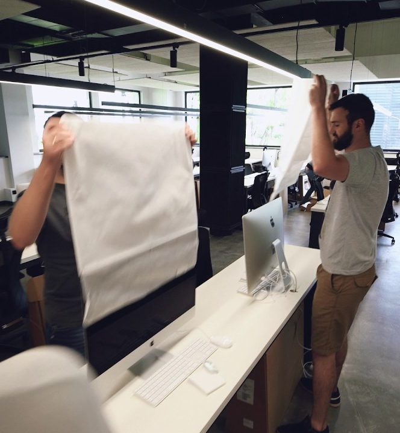

KAZAKH Factory (Kazakh National IT Factory) — Ukraine's only educational institution that works by innovative standards of French School “42”. Here you can learn how to code, enhance your team working skills and advance your creativity by looking for unique solutions.

KAZAKH Factory (Kazakh National IT Factory) — Ukraine's only educational institution that works by innovative standards of French School “42”. Here you can learn how to code, enhance your team working skills and advance your creativity by looking for unique solutions.We don’t have teachers, work-books or lectures. Your academic degree or your grades are not taken into account during the application. Everything depends only on your abilities and motivation. And the education is completely free for all students.
skills and advance your creativity by looking for unique solutions.We don’t have teachers, work-books or lectures. Your academic degree or your grades are not taken into account during the application. Everything depends only on your abilities and motivation. And the education is completely free for all students.
KAZAKH Factory (Kazakh National IT Factory) — Ukraine's only educational institution that works by innovative degree or your grades are not taken into account during the application. Everything depends only on your abilities and motivation. And the education is completely free for all students.
skills and advance your creativity by looking for unique solutions.We don’t have teachers, work-books or lectures. Your academic degree or your grades are not taken into account during the application. Everything depends only on your abilities and motivation. And the education is completely free for all students.
Усі охочі можуть пройти на цьому сайті онлайн-тест у вигляді міні-гри. Тест допомагає виявити здібності, необхідні для роботи програмістом. За шкільними або університетськими оцінками про це судити не можна, тому ми не вимагаємо від кандидатів пред'явити атестат чи диплом. Як показує практика Школи 42 у Франції, навіть студенти з академічною неуспішністю можуть стати талановитими програмістами. Пiсля тесту та особистого візиту починається наступний кваліфікаційний етап — одномісячний випробувальний період навчання під назвою «басейн». Найздібніші та наймотивованіші студенти після проходження «басейну» будуть зараховані до UNIT Factory.
Этап 1: Регистрация на данном сайте.
Этап 2: Онлайн - тест в виде мини - игры.
Этап 3: Визит.
Этап 4: Пройти отборочый тур, т.е бассейн
Этап 5: Лучшие студенты пройдут на обучение в 42.kz factory :)
UNIT Factory uses innovative educational method “Peer-to-Peer” (P2P) tested at French School "42". It is based on collaborative education that helps students unleash their creativity working on projects. The system is based on gamification, i.e. approaches similar to computer role-playing games. Knowledge obtaining and projects completion are accompanied by mastering the skills, acquiring new levels, experience and achievements. Students acquire skills of self-education and continuous professional development essential for IT professionals. Another feature of UNIT Factory is that the curriculum effectively combines professional development with soft skills development and interpersonal communication. We are doing our best for our students to love their profession so that they always remain the first in the field and the last to the couch.
UNIT Factory uses innovative educational method “Peer-to-Peer” (P2P) tested at French School "42". It is based on collaborative education that helps students unleash their creativity working on projects. The system is based on gamification, i.e. approaches similar to computer role-playing games. Knowledge obtaining and projects completion are accompanied by mastering the skills, acquiring new levels, experience and achievements. Students acquire skills of self-education and continuous professional development essential for IT professionals. Another feature of UNIT Factory is that the curriculum effectively combines professional development with soft skills development and interpersonal communication. We are doing our best for our students to love their profession so that they always remain the first in the field and the last to the couch.
Should I know how to swim to get to UNIT Factory through “Pool”?
UNIT Factory uses innovative educational method “Peer-to-Peer” (P2P) tested at French School "42". It is based on collaborative education that helps students unleash their creativity working on projects. The system is based on gamification, i.e. approaches similar to computer role-playing games. Knowledge obtaining and projects completion are accompanied by mastering the skills, acquiring new levels, experience and achievements.
INSIDE 42.kz